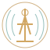

The Long Reverb
Organic birds, dark gold and brass, signal dust, aged black fields, towers, weather, resonance.

The Long ReverbVisual Archive
A controlled archive for visual systems, cover worlds, fine-art studies, signal marks, listening artifacts, and production history.
Organic birds, dark gold and brass, signal dust, aged black fields, towers, weather, resonance.
Black, brass, amber and red pressure; reel-to-reel, radio signal, faces in static, witness marks, and institutional dread.
Water, frequency, teal and cyan fields, geometry, acoustic structure, and luminous depth. Radio dials do not define this series.
Release discipline
Only approved, rights-cleared material enters public view. Master assets remain distinct from previews, derivatives, and web-optimized versions.
The robin remains the minimum fine-art benchmark for future visual work.